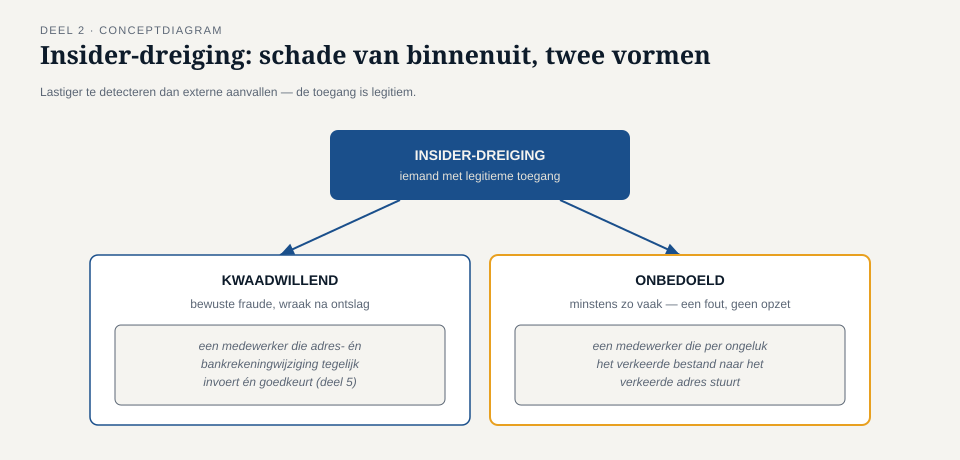

Deel 2 — Dreiging, kwetsbaarheid, risico
Reader · Ductus-cursus Informatiebeveiliging en privacy · niveau 1 (fundament) · deel 2 van 10
Casusvervolg: Merel vraagt door
Na haar eerste rondgang doet Merel iets wat later, in deel 20, een vast onderdeel van haar werkwijze blijkt te zijn geworden: ze vraagt niet "wat hebben we aan maatregelen", maar "wat zou hier fout kunnen gaan, en hoe zou dat er in de praktijk uitzien?" Bij de verlopen accounts uit deel 1 stelt ze aan Ruud, hoofd beheer, een simpele vraag: "Als iemand van buiten dit account in handen zou krijgen — hoe zou dat gaan, en wat zou diegene ermee kunnen?"
Ruud heeft geen antwoord. Niet omdat hij het niet kan bedenken, maar omdat niemand hem die vraag ooit heeft gesteld. Dat is precies het gat dat dit deel dicht: voordat je een maatregel kunt beoordelen, moet je kunnen benoemen wat de maatregel eigenlijk moet tegenhouden.
1. Drie begrippen die voortdurend door elkaar worden gebruikt
In de wandelgangen wordt "risico", "dreiging" en "kwetsbaarheid" vaak als synoniemen gebruikt — "we hebben een risico met die verlopen accounts" klinkt logisch, maar is onnauwkeurig op een manier die er in de praktijk toe doet. De drie begrippen zijn elkaars bouwstenen:
- Dreiging — een partij of gebeurtenis die schade zou kunnen veroorzaken. Een aanvaller die op zoek is naar toegang, een natuurramp, een kwaadwillende medewerker, een storing. Een dreiging bestaat onafhankelijk van jouw organisatie — die is er, of je er nu iets aan doet of niet.
- Kwetsbaarheid — een zwakte in jouw organisatie die een dreiging kan benutten. Een verlopen account dat nog werkt, een niet-gepatcht systeem, een medewerker die nooit is voorgelicht over phishing, een deur die niet op slot gaat.
- Risico — de combinatie: een dreiging die een specifieke kwetsbaarheid benut, met een bepaalde kans en een bepaalde impact. Geen dreiging zonder kwetsbaarheid levert risico op (een aanvaller die geen zwakte vindt, kan niets), en geen kwetsbaarheid zonder dreiging is in de praktijk onschuldig (een zwak slot op een deur die toch nooit iemand probeert).
Dit onderscheid is meer dan een begripsoefening. Het is de reden waarom "we hebben geen incidenten gehad" niets zegt over of je kwetsbaar bent — het zegt alleen dat de dreiging die kwetsbaarheid nog niet heeft gevonden. Risicomanagement, dat in deel 12 een volledig eigen behandeling krijgt, begint precies hier: bij het scherp uit elkaar houden van wat er is (de kwetsbaarheid) en wat er tegen je gebruikt zou kunnen worden (de dreiging).
2. Hoe een aanval feitelijk verloopt
Om dreigingen te kunnen inschatten, moet je weten hoe ze zich in de praktijk gedragen. De meeste aanvallen op een organisatie als Meridiaan volgen niet het beeld van de film — een technisch genie dat binnen enkele seconden een firewall doorbreekt — maar een fasegewijs patroon:
- Verkenning. De aanvaller verzamelt informatie: LinkedIn-profielen van medewerkers, technische details uit vacatureteksten, publiek toegankelijke systemen. Bij Meridiaan zou dit kunnen betekenen: uitzoeken wie in het mutatieteam werkt en welke systemen in vacatures worden genoemd.
- Eerste toegang. Vaak via de mens, niet via de techniek — phishing, een kwaadaardige bijlage, gestolen inloggegevens die elders zijn gelekt en hergebruikt (credential stuffing), of een kwetsbaarheid in een niet-gepatcht systeem.
- Vaste voet krijgen en verkennen binnen de organisatie. Eenmaal binnen, verkent de aanvaller het interne netwerk, op zoek naar waardevolle systemen en naar manieren om rechten te verhogen.
- Het eigenlijke doel. Gegevens stelen, systemen versleutelen voor losgeld (ransomware), fraude plegen, of simpelweg voet aan de grond houden voor later gebruik.
Deze fasering is belangrijk omdat ze laat zien dat beveiliging niet één deur is die je op slot doet, maar een reeks momenten waarop je een aanval kunt onderbreken. Een verlopen account dat nog werkt, is precies zo'n moment: het slaat fase 2 (eerste toegang) over, want de "deur" staat al open.
3. Vier veelvoorkomende aanvalsvormen
Phishing. Een bericht — meestal e-mail, steeds vaker ook sms (smishing) of telefonisch (vishing) — dat zich voordoet als betrouwbaar om iemand te verleiden tot een handeling: een link klikken, inloggegevens invoeren, een bijlage openen. Phishing is succesvol omdat het niet de techniek aanvalt maar het vertrouwen en de tijdsdruk van de ontvanger. Gerichte phishing op een specifiek persoon, met kennis over die persoon, heet spear phishing; gericht op een bestuurder of andere hooggeplaatste functionaris heet dat whaling.
Ransomware. Kwaadaardige software die bestanden versleutelt en losgeld eist voor de sleutel. Moderne ransomware combineert dit vaak met dubbele afpersing: eerst gegevens stelen, dán versleutelen, zodat er ook gedreigd kan worden met openbaarmaking als het slachtoffer weigert te betalen — of zelfs als er wél een goede back-up is. Dat laatste is essentieel om te begrijpen: een goede back-up beschermt tegen het eerste dreigement (versleuteling), niet tegen het tweede (openbaarmaking van gestolen gegevens). Dit is precies waarom "we hebben back-ups" nooit het complete antwoord is op de vraag "zijn we beschermd tegen ransomware".
Social engineering. De bredere categorie waar phishing een vorm van is: het manipuleren van mensen om iets te doen of prijs te geven dat de beveiliging ondermijnt. Denk aan iemand die zich telefonisch voordoet als IT-support en om een wachtwoord vraagt, of iemand die zich fysiek toegang verschaft door een deur open te houden ("tailgating") met een geloofwaardig verhaal.
Insider-dreiging. Schade veroorzaakt door iemand die al legitieme toegang heeft — een medewerker, oud-medewerker, of ingehuurde kracht. Dit kan kwaadwillend zijn (bewuste fraude, wraak na ontslag), maar minstens zo vaak is het onbedoeld: een medewerker die per ongeluk het verkeerde bestand naar het verkeerde adres stuurt, zoals in opdracht 1.2 van deel 1. Insider-dreiging is lastiger te detecteren dan externe aanvallen, juist omdat de toegang legitiem is — er is geen "deur" die wordt geforceerd.
4. Waarom de mens geen "zwakste schakel" is
Een cliché dat in vrijwel elke beveiligingstraining voorkomt, luidt: "de mens is de zwakste schakel". Deze cursus wijst dat cliché bewust af, en niet uit vriendelijkheid — het is inhoudelijk onjuist en het leidt tot verkeerde maatregelen.
Als je de mens als een onveranderlijke zwakte beschouwt, is de logische conclusie: train mensen harder, waarschuw ze vaker, en als het misgaat, is dat hun schuld. In de praktijk verandert dat weinig aan het aantal geslaagde phishingpogingen, want het probeert een structureel ontwerpvraagstuk op te lossen met individuele waakzaamheid.
De alternatieve — en accuratere — manier om ernaar te kijken: de mens is een ontwerpvariabele, net als een systeem of een netwerk. Je ontwerpt om mensen heen zoals je om techniek heen ontwerpt: met de aanname dat er fouten gemaakt zullen worden, en met maatregelen die de impact van die fouten beperken in plaats van te vertrouwen op perfecte waakzaamheid.
Concreet betekent dit:
- Een systeem dat een grote overboeking altijd laat goedkeuren door een tweede persoon, vangt een phishing-fout op vóórdat hij schade doet — ongeacht hoe goed getraind de eerste persoon is.
- Multifactorauthenticatie (deel 5) zorgt dat een gestolen wachtwoord alleen niet meer voldoende is — het beperkt de impact van een menselijke fout in plaats van te vertrouwen op het nooit maken ervan.
- Bewustwording (deel 14) blijft belangrijk, maar als één laag in een stelsel van maatregelen, niet als de enige verdedigingslinie.
Deze omslag — van "de mens is het probleem" naar "de mens is een ontwerpvariabele die je meeneemt in elke maatregel" — is een terugkerend thema in deze cursus en komt in deel 14 volledig uitgewerkt terug.
5. Terug naar Ruuds vraag
Merels vraag aan Ruud — "wat zou iemand met dit account kunnen?" — is in retrospect een informele dreigingsanalyse: ze identificeert een kwetsbaarheid (het verlopen maar actieve account), redeneert vanuit een dreiging (iemand van buiten die het in handen krijgt, via bijvoorbeeld credential stuffing na een lek elders), en komt zo tot een inschatting van risico (wat kan diegene ermee, en hoe erg is dat). Dat diezelfde vraag in deel 12 wordt geformaliseerd tot een volwaardige risicobeoordelingsmethode, doet niets af aan het feit dat het instinct hetzelfde is: eerst begrijpen wat er kan gebeuren, dan pas een maatregel kiezen.


